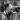
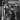

|
MONDAY 29TH NOVEMBER WAS A TYPICAL WINTER DAY IN LONDON. HOWEVER, WITH THE WEATHER COLD OUTSIDE, IT WAS CERTAINLY HOTTING UP INSIDE STUDIO MV4 AT THE BBC MAIDA VALE STUDIOS JUST OUTSIDE CENTRAL LONDON. JAMIROQUAI WERE THERE TO PLAY AN EXCLUSIVE SESSION FOR BBC RADIO 1'S JO WHILEY SHOW, AND WE WENT ALONG TO GET THE EXCLUSIVE LOWDOWN FOR THE OFFICIAL WEBSITE. |